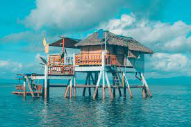

Back to Map
Polillo Islands

Polillo Island
Alphaland Balesin Island Club

Floating cottage
Description:
Polillo (Tagalog pronunciation: [poˈliʎo̞]) is an island in the northeastern region of the Philippine archipelago.
It is the largest island and the namesake of the Polillo Islands.
It is separated from Luzon Island by the Polillo Strait and forms the northern side of Lamon Bay.